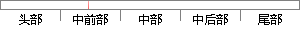

登录及相关模块，其包含注册、登录、退出登录三个功能点。
片段位置图

相似结果|
相似片段 1：六、用户登录／退出／注册管理子模块用户登录模块功能图如图4．7所示，本部分拟实现用户登录与退出，包括管理者、供货商、投递商、购买者的登录与退出，购买者注册和权限管理等三个功能。图4-7用户登录模块功能
相似片段 2：的验证、权限的确定、用户信息的注册和修改、退出登录等部分。用户登录操作包含用户名密码验证和用户权限验证。该模块的操作用例有登录、退出。用户信息包含注册用户和修改维护用户信息。由于用户名密码需要验证，故设
相似片段 3：是新用户的注册和老用户的登录功能。图3．2所示的该模块的用例图，图中表示，顾客用户和餐厅用户启动用例注册和登录，注册用例包含注册类别选择用例。该模块包括注册和登录两个用例，下面通过表的形式对两个用例进行详细的说明，具体内容包括参与者、用例描述、前置条件、异常事件流和工作流程。
相似片段 4：上，机动医疗分队整体注册，然后利用各个功能组室的登录信息分别登录。注册模块利用向导控件填写机动医疗分队整体信息以及各个功能组室的相关信息，其流程示意图如图4．11所示。机动医疗分队完整信息列表J@击铽
相似片段 5：Fig．4．4FunctionalStructure4．3．1 用户登录模块模块功能：用户可以在平台上进行登录，注册和账户管理三个操作。(1)用户登录：用户登录到平台上的操作。用户输入正确的用户名和密码后，系统根据用户类型转到不同的用户界面。用户
相似片段 6：用户信息(2)逻辑层设计一主要包含三个操作：AddUser：添加用户DelUscr：删除用户updateuserInfo：更改用户信息，2．登录／注销模块登录／注销模块的设计主要完成的功能是用户
相似片段 7：行为分析，为用户分类营销活动提供策略指导【37】。用户管理的具体功能如表3．1所示。表3．1用户管理功能表用户登录页面 页面功能组件 l用户注册、登录、退出用户注册页面 页面功能组件用户退出 页面功能
相似片段 8：4.3.1 访问层实现Web 客户端即用户接触的用户界面。这部分功能主要包括用户登录模块和文件管理模块。用户登录模块包括用户的访问控制功能，对用户注册账号的功能、用户账号的安全保管以及用户账号丢失
相似片段 9： AddOutaccount.class 是本系统中新增支出模块的功能类，MainActivity.class为系统主页的功能类。5.2 注册登录模块(1) 注册登录模块布局文件系统客户端的登录和注册界面的布局
相似片段 10：16(3)管理员登录模块：选择管理员登录后，就会跳转到管理员登录界面。管理员填写账号和密码可进入管理页面进行相关操作，对学生、学校及企业用户进行管理。(4)注册模块：点击进入注册页面后，新用户进行
|
※ 片段修改建议 ※
近似词参考：- 相关：相干
- 包含：包括 包罗 包孕 蕴含
- 功能：功效
系统自动生成语句： 登录及相干模块，其包括注册、登录、退出登录三个功效点。
注：本片段修改建议为系统自动生成，仅供参考。